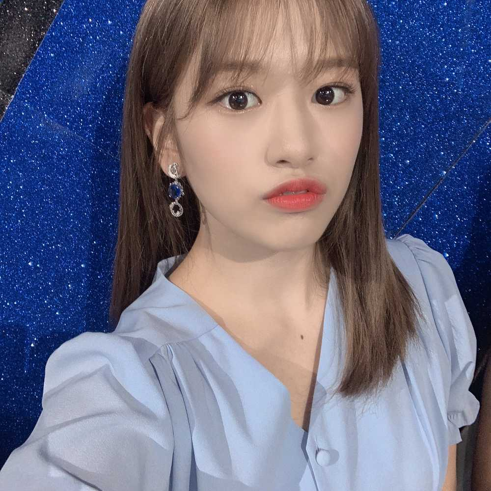

안뇽 내가 왔당
오랜만인 거 같네요 사실 프메로 프듀 다녀온 소감을
쓸까말까 고민을 좀 했는데요
전 방송을 다 챙겨보지는못해서 가기 전에
방송을 하나정도 찾아보고갔거든요
그 때 했던 방송이 컨셉평가였는데요
저는 그 때가 제일 힘들었던 것 같아요
같이 연습하던 친구를 투표해서 내보낸다는 것도 너무
어려웠고 그 때쯤 순위가 많이 하락하기도했구요
근데 지금 생각해보면 그 때는 너무 하나하나 반응을
신경썼던 것 같아요 이 댓글 하나가 내 순위에 영향을
끼치지는않을까하구요 아무튼 방송을 보면서 공감하는 게
되게 많더라구요 그래서 파이널을 보는 내내
응원하는 연습생은 따로 없었지만요 그냥 누가 붙든
누가 떨어지든 축하하고 아쉬워했던 것 같아요
데뷔한 선배로써 그 자리에 있을 수 있어서 다시한번
너무 감사했고 같이 촬영하면서 고생했던 스탭분들을
다시 뵐 수 있어서 또 반가웠어요
너무 진지한 얘기를 한 것 같네요 ㅋㅋㅋㅋㅋㅋㅋㅋㅋ..
힘들었다고는했지만 그 기억들과 경험들이
저에게 많은 도움이 되어주는 것 같아요!! 그러니까
너무 걱정하지는 말라구요 아 그리고 어제 노래연습을
하고왔는데요 언제가 될지는 모르겠지만
연습을 열심히해서 꼭 들려주고싶네요 아마 좀
시간이 걸릴거에요 그러니까 그냥 잊고있다가 받는
깜짝선물인 걸로!!